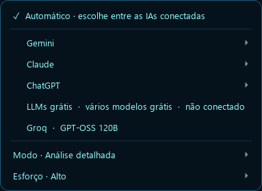
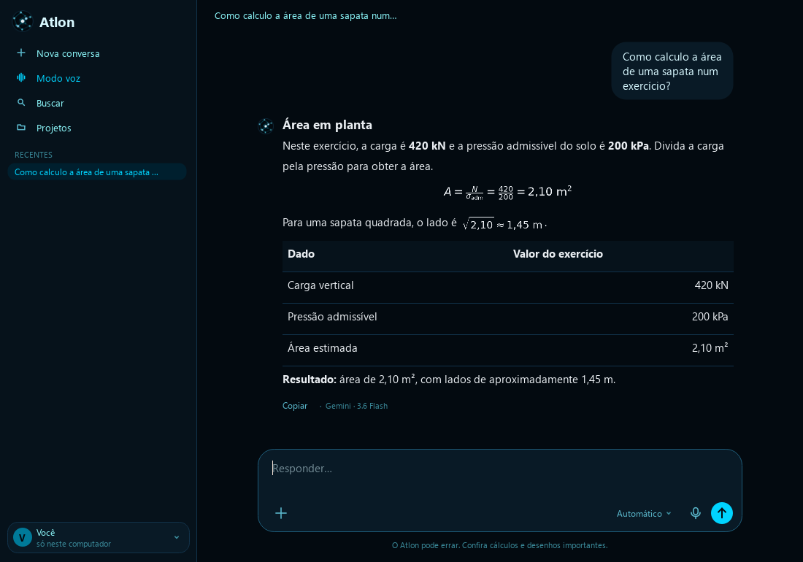

Converse do seu jeito
Fale com o assistente ou abra a conversa por texto, com projetos, arquivos e a IA que você escolher. No Automático, ele troca sozinho quando um limite acaba.
Mark I / Beta 1.4 para Windows
Um assistente que ouve suas ideias e ajuda a levar o trabalho adiante. Do dia a dia ao desenho técnico.
Voz e texto · AutoCAD e Revit · Projetos e documentos
Por dentro do Atlon
Converse por voz ou digite na própria interface. O Atlon usa as conexões que você configurar para responder e preparar ações.
VOCÊ
Como vai funcionar meu bom dia?
Você escolhe seu nome, sua cidade e o que quer ouvir. Depois, é só pedir “bom dia” para receber sua rotina.
Exemplo ilustrativo. Esta página não acessa seu microfone nem suas contas.
Fale com o assistente ou abra a conversa por texto, com projetos, arquivos e a IA que você escolher. No Automático, ele troca sozinho quando um limite acaba.
Na estação conectada, consulte seleção e propriedades do projeto. Peça orientação com referências de AutoCAD e Revit.
Nas operações disponíveis, o Atlon prepara uma prévia. Você confirma a alteração e pode pedir para desfazê-la.
Abra Conversar no Atlon. Na caixa de mensagem, clique em Automático para escolher a IA, o modelo, o modo e o esforço disponível.
O Atlon mostra quem respondeu. As contas aparecem conforme as conexões que você configurar.


O modo Automático usa as conexões disponíveis e avisa quando precisa trocar de IA durante a resposta.
Escolha cidade e estado da obra. O Atlon busca fontes oficiais e aponta o que conferir no AutoCAD e no Revit, com referências técnicas e evidências do modelo.
Fórmulas compactas, tabelas mais limpas e busca de conversas mais leve. Peça no chat para salvar a resposta ou a conversa no Word.
Exemplos reais
Gravados no próprio Atlon, com arquivos de exemplo. A voz grave é a do Atlon; a narração explica cada passo.
Você pergunta, ele responde com a própria voz e muda a tela conforme o assunto.
Qualquer pasta vira um mapa. Entre nas pastas e abra arquivos pela voz.
Abra uma planilha dentro do Atlon e peça para mudar um valor. O total recalcula na hora.
Do PDF para o DWG, com paredes, cortes, projeções e cotas em camadas separadas.
Engenharia, na mesma conversa
Trabalhe com mouse ou pinça. Com o conector ativo, o Atlon atualiza a leitura parcial do arquivo, da vista e da seleção. No Gemini Live, Olhar projeto permite acompanhar mudanças visíveis na janela escolhida.
Peça “o que eu selecionei?” ou explique o que quer mudar. As alterações dependem dos comandos disponíveis, da prévia e da sua confirmação.
m Falou “1,80”? São 1,80 metros. Outra unidade, só quando você indicar.

A.T.L.O.N. / Mark I
Baixe o instalador, siga as etapas e configure sua chave do Gemini no Atlon. O Python já vem incluído.
Windows 10 ou 11 de 64 bits · Beta 1.4 · Sem login para baixar
O essencial para usar
Quatro páginas para instalar, conversar, usar o Desenho Técnico e atualizar o Atlon.
Baixar guia em PDF ↓Instale o Atlon e cadastre sua chave pessoal do Google AI Studio no campo protegido. Escolha seu microfone e sua saída de som na configuração guiada. As cotas dependem da sua conta no Google.
O beta ainda não tem assinatura digital de editor. Se o Windows mostrar um aviso, confira a origem do arquivo e as notas da versão.
Na engrenagem, abra Configuração guiada. Em Do seu jeito, ajuste nome, cidade e bom dia. Você também pode pedir “configure meu bom dia” ou “ative as palmas”. O Hub de IAs reúne as conexões opcionais e a escolha de modelos; voz e IA são escolhas separadas.
Na tela da esfera, clique em CONVERSAR. A conversa por texto tem projetos com instruções e arquivos, anexos de PDF, imagem e planilha, e um botão de áudio que escreve o que você falou. Abra Automático para escolher IA, modelo, modo de resposta e esforço, conforme o provedor. As conversas e os projetos seguem a sua conta Google: em outro computador com a mesma conta, eles aparecem sozinhos. As fórmulas das contas aparecem desenhadas, fáceis de ler.
Para voltar ao assistente, clique em Modo voz. No chat, escreva “Salva essa resposta no Word” para exportar. Para desenhar, use o Desenho Técnico.
Os programas precisam estar instalados separadamente. Abra Desenho Técnico e conecte a janela do projeto. O Revit requer pyRevit/Agent Runtime; somente leitura permite consultar, mas não editar.
Escolha o Local da Obra e comece pela leitura da seleção. A pesquisa de legislação aponta fontes e o que ainda precisa ser verificado. Para alterar o desenho, confira a prévia e confirme. O acompanhamento visual é opcional e usa imagens da janela CAD no Gemini Live; pode consumir cota.
Google, ChatGPT e Claude são opcionais. Use a configuração guiada e o Hub de IAs; cada serviço exige sua própria autorização e acesso compatível. Suas contas e chaves ficam no seu computador.
Para atualizar, feche o Atlon, baixe o novo instalador e instale por cima, na mesma pasta. Não precisa desinstalar antes. Configurações e memórias são preservadas. Mark I é a primeira geração; as próximas serão Mark II e Mark III.